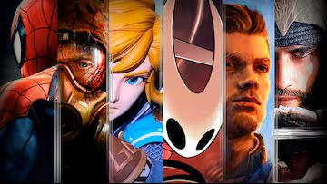

Bienvenido Player 1
Felicidades eres el estilo de videojuego Aventura

Los reyes de las cinematicas, dialogos y guiones. No hay un solo juego de aventura que no sea malo, siempre sorprenden con algo.
No saca el hecho de que al enfrentarse a un boss imposible de matar, dan ganas de morir, pasa tambien con las misiones secundarias.
Algunos ejemplos vendrian a ser Uncharted, Tomb Raiders, Assassin's creed, etc.
Aquellos que dejan los juegos competitivos por los de aventura/historia, encuentran el camino hacia la paz.